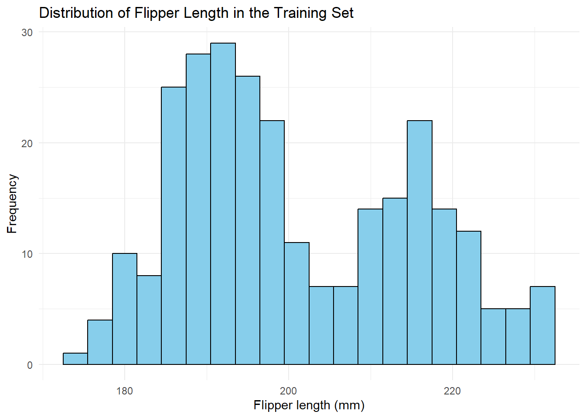
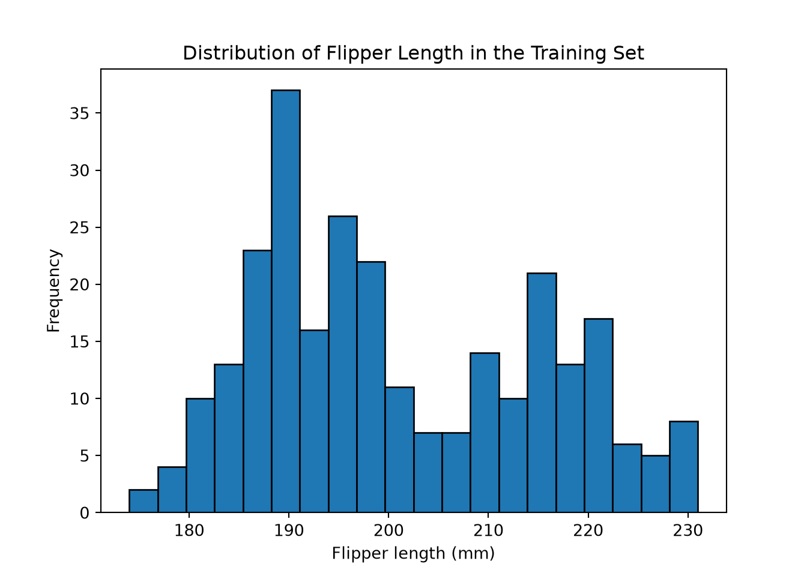
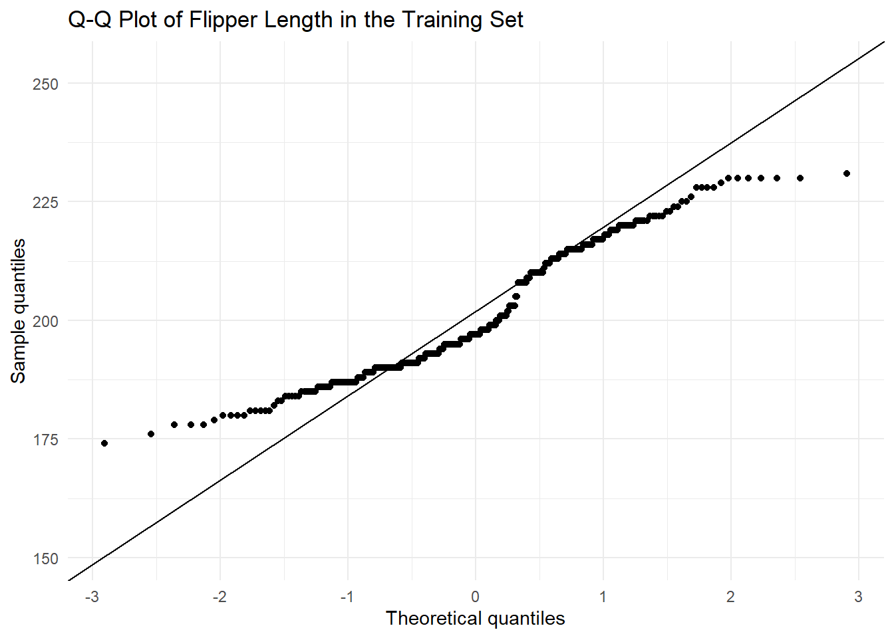
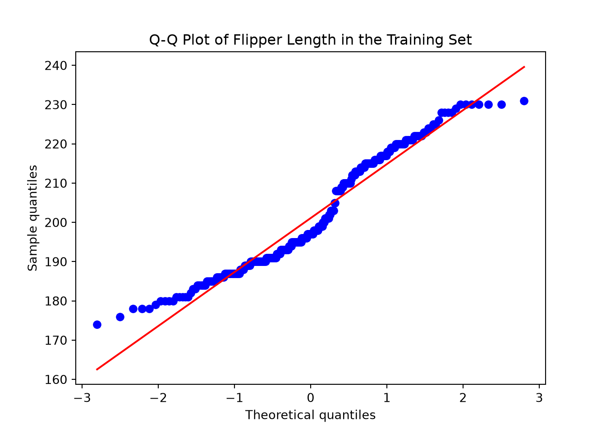
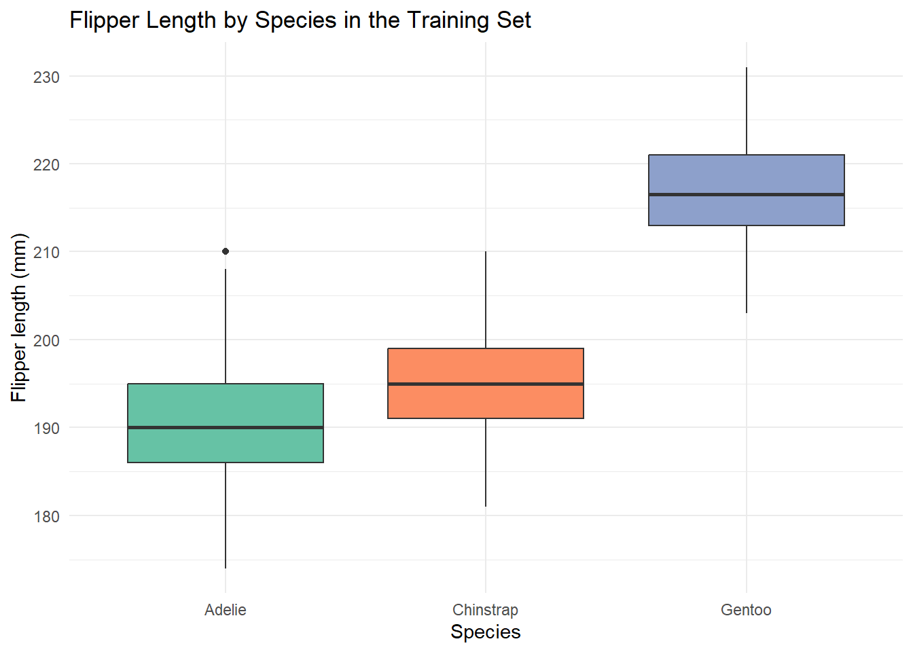
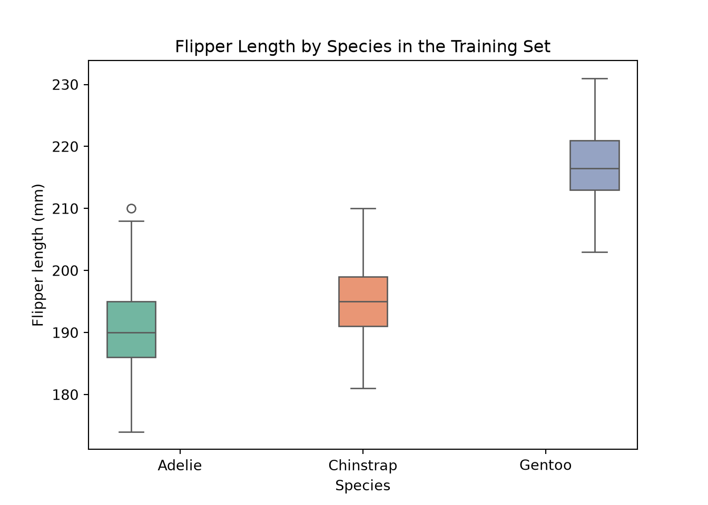
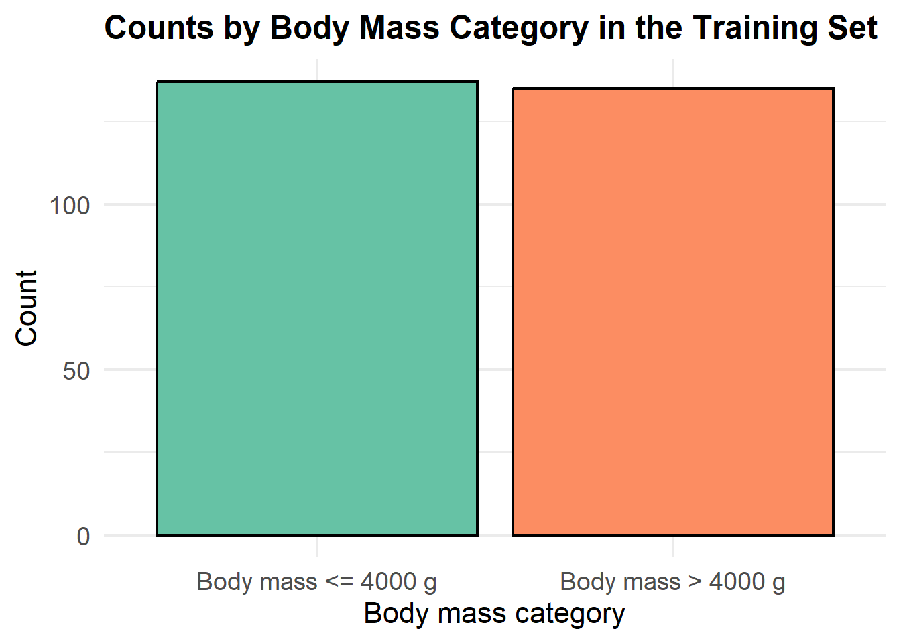
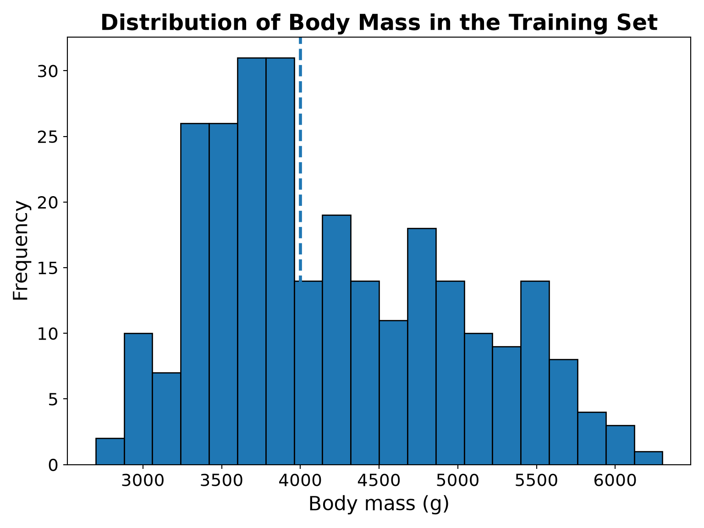
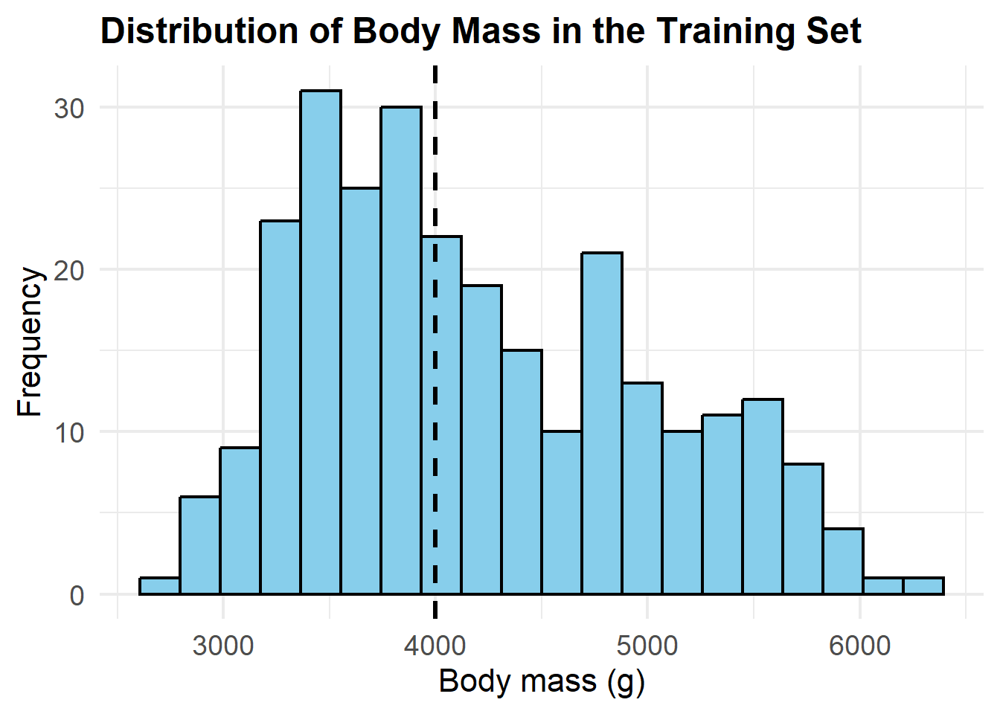

mindmap
root((Frequentist
Hypothesis
Testings
))
Simulation Based<br/>Tests
Classical<br/>Tests
(Chapter 1: <br/>Tests for One<br/>Continuous<br/>Population Mean)
{{Unbounded<br/>Response}}
Known<br/>Population<br/>Variance
)One sample<br/>z test(
Unknown<br/>Population<br/>Variance
)One sample<br/>t test(
{{Proportion between<br/>0 and 1<br/>obtained from a <br/>Binary Response}}
)One sample<br/>z test(
(Chapter 2: <br/>Tests for Two<br/>Continuous<br/>Population Means)
(Chapter 3: <br/>ANOVA-related <br/>Tests for<br/>k Continuous<br/>Population Means)
2 Tests for One Continuous Population Mean
Learning Objectives
By the end of this chapter, you should be able to:
Formulate hypotheses for testing a single population mean or proportion.
Choose and conduct an appropriate one-sample
t-testor one-samplez-testbased on study context and assumptions.Differentiate between cases where the population variance is known and unknown, and select the appropriate test for each case.
Perform one-sample
t-testsandz-testsusing bothRandPython, and interpret the outputs.Apply statistical reasoning to real-world data examples, including evaluating assumptions and limitations.
This chapter introduces statistical tests for analyzing a single sample, a common task in data analysis across many disciplines. These methods are used when we want to compare a sample-based estimate to a known or hypothesized population value. For example, we may want to test whether the average recovery time after a treatment differs from a clinical standard, whether student test scores exceed a benchmark, or whether the proportion of successes in a group differs from an expected rate. In each case, hypothesis testing helps us assess whether the observed difference is large enough to provide evidence against the null hypothesis, or whether it could reasonably be explained by random sampling variation.
In this chapter, we review tests for making inference about a single population parameter based on one sample. We focus on two common settings:
- A population mean, where the response variable is continuous, and
- A population proportion, where the response variable is binary.
For a single population mean, the choice of test depends on whether the population variance is known or unknown. When the population variance is unknown, we use the one-sample t-test. When the population variance is known, we use the one-sample z-test. For binary outcomes, we use a one-sample proportion z-test to compare the population proportion to a hypothesized value.
The choice of test depends on the type of response variable, the information available about the population variance, and the sample size. Each section below introduces the test setup, hypotheses, assumptions, theoretical background, and implementation in both R and Python using real or simulated data.
2.1 One-sample t-test for the mean
2.1.1 Review
Use this test when:
- You have one sample from a population.
- The response variable is quantitative (also known as continuous).
- You want to test whether the population mean is equal to a specific reference value.
- The population variance is unknown.
- The sample is approximately normal, or the sample size is large enough for the sampling distribution of the sample mean to be approximately normal.
In this section, we focus on the case where the population variance is unknown. The known-variance case will be discussed later in Section 2.2 using the one-sample z-test.
The one-sample t-test is used when we want to compare a sample mean to a specific reference value. Suppose we observe a random sample from a population where both the population mean \(\mu\) and population standard deviation \(\sigma\) are unknown. We use the sample mean and sample standard deviation to assess whether the population mean appears to differ from the reference value. For example, we may want to know whether the average flipper length of penguins is different from 200 mm.
The main statistical question is:
Is the population mean statistically different from the hypothesized value \(\mu_0\)?
For example, if the hypothesized value is \(\mu_0 = 200\), then the question becomes:
Does the sample provide evidence that the population mean is different from 200?
Because the population variance is unknown, we estimate it using the sample standard deviation. As we will see later in this chapter, this additional uncertainty (estimating the variance) is why the test statistic follows a t-distribution rather than a standard normal distribution.
Tip: Sample standard deviation
When the population standard deviation \(\sigma\) is unknown, we estimate it using the sample standard deviation:
\[ s = \sqrt{\frac{1}{n - 1}\sum_{i=1}^{n}(X_i - \bar{X})^2}. \]
Here, \(\bar{X}\) is the sample mean, and \(s\) measures how spread out the observations are around the sample mean.
2.1.2 Study design
Now that we have reviewed the general idea behind the one-sample t-test, let us apply it to a real data example. In this section, we use the penguins data set from the palmerpenguins package in R. This data set contains measurements for penguins observed near Palmer Station, Antarctica. Some of the main quantitative variables include flipper_length_mm, which records the length of a penguin’s flipper in millimetres; bill_length_mm, which records the length of the penguin’s bill in millimetres; bill_depth_mm, which records the depth or thickness of the bill in millimetres; and body_mass_g, which records the penguin’s body mass in grams.
For this example, the response variable of interest is flipper_length_mm, which records penguin flipper length in millimetres. We treat the observed penguins in the data set as a sample from a broader population of similar penguins. Let \(\mu\) denote the population mean flipper length of penguins. Suppose we want to compare the population mean flipper length to a reference value of 200 mm. In other words, we want to assess whether the sample provides evidence that the average flipper length in the population is different from 200 mm.
The main statistical question is:
Does the data provide evidence that the population mean flipper length of penguins is different from 200 mm?
In this example, the hypothesized population mean is
\[ \mu_0 = 200. \]
To keep the exploratory and inferential parts of the analysis separate, we will split the data into a training set and a test set. The training set will be used for exploratory data analysis, and the test set will be used to conduct the formal hypothesis test.
2.1.3 Data Collection and Wrangling
To answer this question, we obtain the penguins data set from the palmerpenguins package. Note that we treat these data as a sample from a broader population of similar penguins. First, we create a new copy of the data set to avoid modifying the original data directly. This step is optional but it is a good habit when preparing data for analysis from datasets in R packages.
import seaborn as sns
import pandas as pd
from sklearn.model_selection import train_test_split
# Load the penguins data set and create a copy
penguins_data = sns.load_dataset("penguins").copy()
# Keep variables used in this section and remove missing values
penguins_data = penguins_data[
[
"species",
"island",
"bill_length_mm",
"bill_depth_mm",
"flipper_length_mm",
"body_mass_g",
]
].dropna()Finally, we randomly create training and test sets from this data set, using an 80-20 split. The training set will be used for exploratory data analysis, while the test set will be reserved for the formal one-sample t-test.
Because penguin species differ in their physical measurements, it is helpful to keep the proportion of species similar across the training and test sets. Otherwise, one set may contain relatively more penguins from a species with naturally longer or shorter flippers, which could affect the analysis. We therefore stratify the split by species.
Quick review!
Although both R and Python allow us to set a random seed, set.seed(42) in R and random_state = 42 in Python do not generally produce the same random split. This is because the two languages use different random number generators and different splitting algorithms. To make the results from R and Python directly comparable, we create the training and test sets once in R and then pass those same data sets to the Python code.
# Set seed for reproducibility
set.seed(42)
# Randomly split into training and testing sets, stratified by species
penguins_split <- rsample::initial_split(
penguins_data,
prop = 0.8,
strata = species
)
# Assign observations to training and testing sets
train_set <- rsample::training(penguins_split)
test_set <- rsample::testing(penguins_split)
# Sanity check
cat("Training shape:", dim(train_set), "\n")Training shape: 272 6 Testing shape: 70 6 cat("Training species proportions:\n")Training species proportions:print(prop.table(table(train_set$species)))
Adelie Chinstrap Gentoo
0.4411765 0.1985294 0.3602941 cat("\nTesting species proportions:\n")
Testing species proportions:print(prop.table(table(test_set$species)))
Adelie Chinstrap Gentoo
0.4428571 0.2000000 0.3571429 # Use the training and test sets created in the R chunk
train_set = r.train_set.copy()
test_set = r.test_set.copy()
# Sanity check
print("Training shape:", train_set.shape)Training shape: (272, 6)print("Testing shape:", test_set.shape)Testing shape: (70, 6)print("\nTraining species proportions:")
Training species proportions:print(train_set["species"].value_counts(normalize=True))species
Adelie 0.441176
Gentoo 0.360294
Chinstrap 0.198529
Name: proportion, dtype: float64print("\nTesting species proportions:")
Testing species proportions:print(test_set["species"].value_counts(normalize=True))species
Adelie 0.442857
Gentoo 0.357143
Chinstrap 0.200000
Name: proportion, dtype: float64The species proportions in the training and test sets are quite similar. For example, Adelie penguins make up about 44% of both sets, Chinstrap penguins about 20%, and Gentoo penguins about 36%. This suggests that the stratified split worked as intended and that the two sets have comparable species.
2.1.4 Exploratory Data Analysis (EDA)
Before conducting the formal hypothesis test, we use the training set to explore the distribution of flipper_length_mm. Since the one-sample t-test is used for a quantitative response variable, we first examine the center, spread, and overall shape of the flipper length distribution.
We begin by computing summary statistics for flipper_length_mm in the training set.
print(train_set["flipper_length_mm"].describe())count 272.000000
mean 201.073529
std 14.013506
min 174.000000
25% 190.000000
50% 197.000000
75% 214.000000
max 231.000000
Name: flipper_length_mm, dtype: float64print("\nStandard deviation:")
Standard deviation:print(train_set["flipper_length_mm"].std())14.013505532620483The summary statistics give us an initial sense of the typical flipper length and the amount of variability in the training data. In the training set, flipper lengths range from 174 mm to 231 mm. The sample mean is about 201.1 mm, while the median is 197 mm. The sample standard deviation is about 14.0 mm, indicating that flipper lengths vary noticeably across penguins. Since the hypothesized value in this section is 200 mm, the training-set mean appears close to the reference value. However, the formal test will be conducted later using the test set.
Next, we visualize the distribution of flipper lengths using a histogram. This helps us assess whether the data are approximately symmetric and whether there are unusual observations.
ggplot(train_set, aes(x = flipper_length_mm)) +
geom_histogram(bins = 20, color = "black", fill = "skyblue") +
labs(
title = "Distribution of Flipper Length in the Training Set",
x = "Flipper length (mm)",
y = "Frequency"
) +
theme_minimal()
import matplotlib.pyplot as plt
plt.hist(
train_set["flipper_length_mm"],
bins=20,
edgecolor="black"
)
plt.title("Distribution of Flipper Length in the Training Set")
plt.xlabel("Flipper length (mm)")
plt.ylabel("Frequency")
plt.show()
The histogram shows that the distribution of flipper length is not perfectly bell-shaped. Instead, it appears to have more than one cluster, with many observations around 190–200 mm and another group around 210–220 mm. This suggests that the overall distribution may be influenced by differences among penguin species. Although the distribution is not exactly normal, it does not show extreme skewness or severe outliers. Since the sample size is reasonably large, the one-sample t-test may still be appropriate due to the central limit theorem.
We can also use a Q-Q plot to compare the distribution of flipper lengths to a normal distribution. If the points roughly follow a straight line, this suggests that the normality assumption is not seriously violated.
ggplot(train_set, aes(sample = flipper_length_mm)) +
stat_qq() +
stat_qq_line() +
labs(
title = "Q-Q Plot of Flipper Length in the Training Set",
x = "Theoretical quantiles",
y = "Sample quantiles"
) +
theme_minimal()
import scipy.stats as stats
import matplotlib.pyplot as plt
stats.probplot(
train_set["flipper_length_mm"],
dist="norm",
plot=plt
)((array([-2.80127058, -2.50184659, -2.33205435, -2.21092661, -2.11553933,
-2.0362317 , -1.96798137, -1.9078294 , -1.85387981, -1.80484178,
-1.75979524, -1.71806029, -1.67911976, -1.64257067, -1.60809269,
-1.57542677, -1.54436037, -1.51471678, -1.48634749, -1.45912641,
-1.43294553, -1.40771158, -1.38334345, -1.35977016, -1.33692918,
-1.31476515, -1.29322882, -1.27227616, -1.25186762, -1.23196759,
-1.21254382, -1.19356706, -1.17501065, -1.15685027, -1.1390636 ,
-1.12163017, -1.10453114, -1.08774909, -1.07126792, -1.05507272,
-1.03914963, -1.02348574, -1.00806902, -0.99288825, -0.97793292,
-0.96319317, -0.94865978, -0.93432404, -0.9201778 , -0.90621335,
-0.89242341, -0.87880113, -0.86534 , -0.85203388, -0.83887693,
-0.82586361, -0.81298867, -0.80024711, -0.78763416, -0.77514529,
-0.76277616, -0.75052265, -0.7383808 , -0.72634685, -0.71441718,
-0.70258833, -0.69085698, -0.67921994, -0.66767417, -0.65621673,
-0.64484479, -0.63355563, -0.62234665, -0.61121533, -0.60015923,
-0.589176 , -0.5782634 , -0.56741923, -0.55664138, -0.54592781,
-0.53527654, -0.52468565, -0.51415329, -0.50367766, -0.49325701,
-0.48288966, -0.47257395, -0.46230828, -0.45209111, -0.44192091,
-0.43179623, -0.42171561, -0.41167766, -0.40168103, -0.39172438,
-0.38180641, -0.37192586, -0.36208149, -0.35227208, -0.34249646,
-0.33275345, -0.32304193, -0.31336079, -0.30370892, -0.29408527,
-0.28448878, -0.27491841, -0.26537316, -0.25585203, -0.24635404,
-0.23687821, -0.22742362, -0.2179893 , -0.20857435, -0.19917786,
-0.18979891, -0.18043664, -0.17109015, -0.16175858, -0.15244108,
-0.1431368 , -0.13384489, -0.12456452, -0.11529487, -0.10603511,
-0.09678444, -0.08754204, -0.07830712, -0.06907886, -0.05985649,
-0.05063921, -0.04142622, -0.03221676, -0.02301002, -0.01380523,
-0.00460161, 0.00460161, 0.01380523, 0.02301002, 0.03221676,
0.04142622, 0.05063921, 0.05985649, 0.06907886, 0.07830712,
0.08754204, 0.09678444, 0.10603511, 0.11529487, 0.12456452,
0.13384489, 0.1431368 , 0.15244108, 0.16175858, 0.17109015,
0.18043664, 0.18979891, 0.19917786, 0.20857435, 0.2179893 ,
0.22742362, 0.23687821, 0.24635404, 0.25585203, 0.26537316,
0.27491841, 0.28448878, 0.29408527, 0.30370892, 0.31336079,
0.32304193, 0.33275345, 0.34249646, 0.35227208, 0.36208149,
0.37192586, 0.38180641, 0.39172438, 0.40168103, 0.41167766,
0.42171561, 0.43179623, 0.44192091, 0.45209111, 0.46230828,
0.47257395, 0.48288966, 0.49325701, 0.50367766, 0.51415329,
0.52468565, 0.53527654, 0.54592781, 0.55664138, 0.56741923,
0.5782634 , 0.589176 , 0.60015923, 0.61121533, 0.62234665,
0.63355563, 0.64484479, 0.65621673, 0.66767417, 0.67921994,
0.69085698, 0.70258833, 0.71441718, 0.72634685, 0.7383808 ,
0.75052265, 0.76277616, 0.77514529, 0.78763416, 0.80024711,
0.81298867, 0.82586361, 0.83887693, 0.85203388, 0.86534 ,
0.87880113, 0.89242341, 0.90621335, 0.9201778 , 0.93432404,
0.94865978, 0.96319317, 0.97793292, 0.99288825, 1.00806902,
1.02348574, 1.03914963, 1.05507272, 1.07126792, 1.08774909,
1.10453114, 1.12163017, 1.1390636 , 1.15685027, 1.17501065,
1.19356706, 1.21254382, 1.23196759, 1.25186762, 1.27227616,
1.29322882, 1.31476515, 1.33692918, 1.35977016, 1.38334345,
1.40771158, 1.43294553, 1.45912641, 1.48634749, 1.51471678,
1.54436037, 1.57542677, 1.60809269, 1.64257067, 1.67911976,
1.71806029, 1.75979524, 1.80484178, 1.85387981, 1.9078294 ,
1.96798137, 2.0362317 , 2.11553933, 2.21092661, 2.33205435,
2.50184659, 2.80127058]), array([174, 176, 178, 178, 178, 179, 180, 180, 180, 180, 181, 181, 181,
181, 181, 182, 183, 183, 184, 184, 184, 184, 184, 185, 185, 185,
185, 185, 185, 186, 186, 186, 186, 186, 186, 187, 187, 187, 187,
187, 187, 187, 187, 187, 187, 187, 187, 187, 188, 188, 188, 188,
189, 189, 189, 189, 189, 189, 190, 190, 190, 190, 190, 190, 190,
190, 190, 190, 190, 190, 190, 190, 190, 190, 190, 190, 191, 191,
191, 191, 191, 191, 191, 191, 191, 191, 191, 191, 191, 192, 192,
192, 192, 192, 193, 193, 193, 193, 193, 193, 193, 193, 193, 193,
193, 194, 194, 194, 194, 195, 195, 195, 195, 195, 195, 195, 195,
195, 195, 195, 195, 195, 195, 196, 196, 196, 196, 196, 196, 196,
196, 197, 197, 197, 197, 197, 197, 197, 197, 197, 198, 198, 198,
198, 198, 198, 198, 199, 199, 199, 199, 199, 199, 200, 200, 200,
201, 201, 201, 201, 201, 201, 202, 202, 203, 203, 203, 203, 203,
205, 205, 208, 208, 208, 208, 208, 208, 208, 209, 209, 209, 210,
210, 210, 210, 210, 210, 210, 210, 210, 210, 211, 212, 212, 212,
212, 213, 213, 213, 213, 213, 213, 214, 214, 214, 214, 214, 215,
215, 215, 215, 215, 215, 215, 215, 215, 215, 216, 216, 216, 216,
216, 216, 217, 217, 217, 217, 217, 217, 218, 218, 218, 219, 219,
219, 219, 220, 220, 220, 220, 220, 220, 220, 221, 221, 221, 221,
221, 222, 222, 222, 222, 222, 223, 223, 224, 224, 225, 225, 226,
228, 228, 228, 228, 229, 230, 230, 230, 230, 230, 230, 231],
dtype=int32)), (np.float64(13.750127577481761), np.float64(201.0735294117647), np.float64(0.9745733646748277)))plt.title("Q-Q Plot of Flipper Length in the Training Set")
plt.xlabel("Theoretical quantiles")
plt.ylabel("Sample quantiles")
plt.show()
The Q-Q plot also suggests that the flipper length distribution is not perfectly normal. The points deviate from the reference line, especially in the lower and upper tails. This is consistent with what we observed in the histogram. However, the one-sample t-test is generally robust for moderate to large sample sizes, especially when there are no extreme outliers.
Finally, because penguin species differ in their physical measurements, we examine flipper length by species. This is not part of the formal one-sample test, but it helps us understand the structure of the data and why stratifying the train-test split by species was useful.
ggplot(train_set, aes(x = species, y = flipper_length_mm, fill = species)) +
geom_boxplot() +
labs(
title = "Flipper Length by Species in the Training Set",
x = "Species",
y = "Flipper length (mm)"
) +
scale_fill_brewer(palette = "Set2") +
theme_minimal() +
theme(legend.position = "none")
import matplotlib.pyplot as plt
import seaborn as sns
species_order = ["Adelie", "Chinstrap", "Gentoo"]
sns.boxplot(
data=train_set,
x="species",
y="flipper_length_mm",
hue="species",
order=species_order,
hue_order=species_order,
palette="Set2",
legend=False
)
plt.title("Flipper Length by Species in the Training Set")
plt.xlabel("Species")
plt.ylabel("Flipper length (mm)")
plt.show()
The boxplots show that flipper length differs noticeably by species. Gentoo penguins tend to have longer flippers than Adelie and Chinstrap penguins, while Adelie penguins tend to have the shortest flippers among the three species. This helps explain why the overall distribution of flipper length is not perfectly normal: the full sample combines penguins from species with different typical flipper lengths.
Overall, the exploratory analysis shows that flipper length has a meaningful species structure and is not perfectly normally distributed. However, because the training and test sets have similar species proportions and the sample size is reasonably large, the one-sample t-test remains a reasonable first approach for testing the average flipper length in the broader penguin population represented by these data. The formal test will be conducted on the test set to keep the exploratory and inferential parts of the analysis separate.
2.1.5 Testing Settings
Before writing the hypotheses, we summarize the testing setup for this example. The response variable is flipper_length_mm, which is a quantitative variable measured in millimetres. The parameter of interest is the population mean flipper length, denoted by \(\mu\).
In this example, we compare the population mean flipper length to the reference value
\[ \mu_0 = 200. \]
Since the population standard deviation is unknown, we use the sample standard deviation to estimate it. Therefore, the appropriate test is a one-sample t-test.
The formal test will be conducted using the test set. This keeps the exploratory analysis and the hypothesis test separate: the training set was used to understand the data, while the test set is used to calculate the test statistic and p-value.
For this test, we use:
-
Response variable:
flipper_length_mm - Parameter of interest: \(\mu\), the population mean flipper length
- Reference value: \(\mu_0 = 200\)
-
Test: one-sample
t-test - Population variance: unknown
-
Sample used for inference:
test_set - Significance level: \(\alpha = 0.05\)
Because this is a one-sample t-test, we assume that the observations are independent and that the sampling distribution of the sample mean is approximately normal. The exploratory analysis suggested that the raw flipper length distribution is not perfectly normal, partly because penguin species differ in their typical flipper lengths. However, the sample size is reasonably large and there are no severe outliers, so using the one-sample t-test is still a reasonable approach for this example.
2.1.6 Hypothesis Definitions
We now translate the research question into formal statistical hypotheses. Recall that \(\mu\) denotes the population mean flipper length of penguins, and the reference value is
\[ \mu_0 = 200. \]
Since the research question asks whether the population mean flipper length is different from 200 mm, we use a two-sided test.
The hypotheses are:
\[H_0: \mu = 200 \quad vs \quad H_a: \mu \neq 200\]
The null hypothesis states that the population mean flipper length is 200 mm. Under this hypothesis, any difference between the sample mean and 200 mm is attributed to random sampling variation.
The alternative hypothesis states that the population mean flipper length is not 200 mm. This includes both possibilities: the population mean could be less than 200 mm or greater than 200 mm.
In words, we are testing whether the test-set data provide sufficient evidence that the average flipper length in the broader penguin population represented by these data differs from 200 mm.
2.1.7 Test Flavour and Components
The one-sample t-test compares the sample mean to the hypothesized population mean. In this example, the hypothesized value is \(\mu_0 = 200\) mm. Let \(\bar{x}\) denote the sample mean flipper length in the test set, and let \(s\) denote the sample standard deviation of flipper length in the test set. If the test set contains \(n\) penguins, the test statistic is
\[ t = \frac{\bar{x} - \mu_0}{s / \sqrt{n}}. \]
In this formula:
- \(\bar{x}\) is the sample mean flipper length.
- \(\mu_0\) is the hypothesized population mean, which is 200 mm in this example.
- \(s\) is the sample standard deviation.
- \(n\) is the sample size.
- \(s / \sqrt{n}\) is the estimated standard error of the sample mean.
The numerator, \(\bar{x} - \mu_0\), measures how far the sample mean is from the hypothesized value. The denominator, \(s / \sqrt{n}\), scales this difference by the estimated variability of the sample mean. Therefore, the test statistic measures how many estimated standard errors the sample mean is away from the hypothesized value.
Heads-up!
The test statistic \(t\) is computed from the sample. This means that \(t\) itself is a random variable: if we collected a different random sample of penguins, we would likely get a different sample mean \(\bar{x}\), a different sample standard deviation \(s\), and therefore a different value of \(t\).
Because the population standard deviation is unknown, we estimate it using the sample standard deviation \(s\). This is the key reason the null distribution is a t-distribution rather than a standard normal distribution.
Tip: Null distribution of the test statistic
Under the null hypothesis,
\[ H_0: \mu = 200, \]
the test statistic
\[ T = \frac{\bar{X} - \mu_0}{S / \sqrt{n}} \]
follows a t-distribution with \(n - 1\) degrees of freedom:
\[ T \sim t_{n-1}. \]
This distribution describes the values we would expect the test statistic to take if the null hypothesis were true. Since the alternative hypothesis is two-sided, the p-value is computed as
\[ \textit{p-value} = 2 \times Pr(T_{n-1} \geq |t|), \]
where \(t\) is the test statistic computed from the observed sample.
2.1.8 Inferential Conclusions
The null distribution described above gives us a reference point for deciding whether the observed test statistic is unusually large. In other words, it tells us what values of the test statistic are typical when the null hypothesis is true.
After computing the test statistic and p-value, we compare the p-value to the significance level \(\alpha = 0.05\).
If the p-value is less than 0.05, we reject the null hypothesis. In that case, we conclude that the data provide sufficient evidence that the population mean flipper length is different from 200 mm.
If the p-value is greater than or equal to 0.05, we do not reject the null hypothesis. In that case, we conclude that the data do not provide sufficient evidence that the population mean flipper length is different from 200 mm.
It is important to phrase the second conclusion carefully. Failing to reject the null hypothesis does not prove that the population mean is exactly 200 mm. It only means that, based on the available sample, we do not have enough evidence to conclude that it differs from 200 mm.
2.1.9 How to run the test in R and Python?
We now conduct the formal one-sample t-test using the test set. Recall that the training set was used for exploratory data analysis, while the test set is reserved for the formal hypothesis test. The test compares the sample mean of flipper_length_mm to the hypothesized value \(\mu_0 = 200\).
t_test_result <- t.test(
test_set$flipper_length_mm,
mu = 200,
alternative = "two.sided",
conf.level = 0.95
)
t_test_result
One Sample t-test
data: test_set$flipper_length_mm
t = 0.17512, df = 69, p-value = 0.8615
alternative hypothesis: true mean is not equal to 200
95 percent confidence interval:
196.8825 203.7175
sample estimates:
mean of x
200.3 import numpy as np
import scipy.stats as stats
# Extract the response variable from the R-created test set
flipper_test = test_set["flipper_length_mm"]
# Hypothesized population mean
mu_0 = 200
# One-sample t-test
t_stat, p_value = stats.ttest_1samp(
flipper_test,
popmean=mu_0,
alternative="two-sided"
)
# Sample size and degrees of freedom
n = len(flipper_test)
df = n - 1
# Sample mean and sample standard deviation
sample_mean = flipper_test.mean()
sample_sd = flipper_test.std(ddof=1)
# Standard error
standard_error = sample_sd / np.sqrt(n)
# 95% confidence interval for the population mean
confidence_level = 0.95
alpha = 1 - confidence_level
t_critical = stats.t.ppf(1 - alpha / 2, df)
ci_lower = sample_mean - t_critical * standard_error
ci_upper = sample_mean + t_critical * standard_error
print(f"Sample mean: {sample_mean:.3f}")Sample mean: 200.300print(f"Sample standard deviation: {sample_sd:.3f}")Sample standard deviation: 14.333print(f"Sample size: {n}")Sample size: 70print(f"Degrees of freedom: {df}")Degrees of freedom: 69print(f"t-statistic: {t_stat:.3f}")t-statistic: 0.175print(f"p-value: {p_value:.4f}")p-value: 0.8615print(f"95% confidence interval: ({ci_lower:.3f}, {ci_upper:.3f})")95% confidence interval: (196.882, 203.718)Details about R code and output
In order to run this test in R, we use the t.test() function. This function can be used to perform both one-sample and two-sample t-tests. In this section, we use it for a one-sample test because we are comparing one sample mean to a fixed hypothesized value.
The relevant arguments are as follows:
xis the numeric vector of observed data values. In this example,xistest_set$flipper_length_mm.muis the hypothesized population mean under the null hypothesis. In this example, we setmu = 200because we are testing whether the population mean flipper length differs from 200 mm.alternativespecifies the direction of the alternative hypothesis. We usealternative = "two.sided"because our alternative hypothesis is \(H_A: \mu \neq 200\).conf.levelspecifies the confidence level for the confidence interval. We useconf.level = 0.95, which gives a 95% confidence interval for the population mean.
The output from t.test() includes the test statistic, degrees of freedom, p-value, alternative hypothesis, confidence interval, and sample mean. The p-value is used to decide whether to reject the null hypothesis at the chosen significance level. The confidence interval gives a range of plausible values for the population mean flipper length.
Details about Python code and output
In Python, we use the ttest_1samp() function from the scipy.stats module. This function performs a one-sample t-test by comparing a sample mean to a hypothesized population mean.
The relevant arguments are:
The first argument is the numeric vector of observed data values. In this example, we use
flipper_test, which contains theflipper_length_mmvalues from the test set.popmeanis the hypothesized population mean under the null hypothesis. In this example, we setpopmean = 200.alternativespecifies the direction of the alternative hypothesis. We usealternative = "two-sided"because we are testing whether the population mean is different from 200 mm.
The ttest_1samp() function returns the test statistic and p-value. Unlike the R function t.test(), it does not automatically print the sample mean, degrees of freedom, standard deviation, or confidence interval in the same formatted output. For this reason, we calculate these quantities manually in the Python code.
The output gives the test statistic, degrees of freedom, p-value, and a 95% confidence interval for the population mean flipper length. These values will be used to decide whether the test set provides sufficient evidence that the population mean flipper length differs from 200 mm.
2.1.10 Storytelling
Based on the test set, the average flipper length is 200.3 mm, which is very close to the hypothesized value of 200 mm. The one-sample t-test gives a test statistic of 0.175 and a p-value of 0.8615.
Since the p-value is much larger than the significance level \(\alpha = 0.05\), we do not reject the null hypothesis. In other words, the test set does not provide sufficient evidence that the population mean flipper length differs from 200 mm.
The 95% confidence interval for the population mean flipper length is \((196.88,\ 203.72).\) This interval includes 200 mm, which is consistent with the hypothesis test result. Based on these data, an average flipper length of 200 mm is a plausible value for the broader penguin population represented by this sample.
In plain language, the observed average flipper length is not significantly different from 200 mm, and the small difference between 200.3 mm and 200 mm can reasonably be explained by random sampling variation.
2.2 One-sample z-test for the mean
2.2.1 Review
Use this test when:
- You have one sample from a population.
- The response variable is quantitative (also known as continuous).
- You want to test whether the population mean is equal to a specific reference value.
- The population variance, or equivalently the population standard deviation, is known.
- The sample is approximately normal, or the sample size is large enough for the sampling distribution of the sample mean to be approximately normal.
In the previous section, we used the one-sample t-test because the population variance was unknown and had to be estimated using the sample standard deviation. In this section, we focus on a different case: the population variance is assumed to be known.
The one-sample z-test is used when we want to compare a sample mean to a hypothesized population mean and the population standard deviation is known. Suppose we observe a random sample of size \(n\),
\[ x_1, x_2, \dots, x_n, \]
from a population with unknown mean \(\mu\) but also known population standard deviation \(\sigma\). We want to assess whether the data provide enough evidence to conclude that \(\mu\) differs from a specified reference value, denoted by \(\mu_0\).
The main statistical question is:
Is the population mean statistically different from the hypothesized value \(\mu_0\)?
For example, if the hypothesized value is \(\mu_0 = 200\), then the question becomes:
Does the sample provide evidence that the population mean is different from 200?
The key difference from the one-sample t-test is how we measure uncertainty. For the t-test, the population standard deviation is unknown, so we estimate it using the sample standard deviation. For the z-test, the population standard deviation \(\sigma\) is treated as known. As a result, the test statistic follows a standard normal distribution under the null hypothesis.
Quick review!
In practice, the population standard deviation is rarely known exactly. The one-sample z-test is most appropriate when \(\sigma\) is known from reliable external information, such as historical records, a very large previous study, or a well-established measurement process. When \(\sigma\) is unknown, the one-sample t-test is always the more appropriate choice.
2.2.2 Study design
We continue with the penguins data set from the palmerpenguins package. As before, the response variable of interest is flipper_length_mm, which records penguin flipper length in millimetres. We treat the observed penguins in the data set as a sample from a broader population of similar penguins.
Let \(\mu\) denote the population mean flipper length of penguins. We again compare the population mean flipper length to the reference value
\[ \mu_0 = 200. \]
The main statistical question is:
Does the data provide evidence that the population mean flipper length of penguins is different from 200 mm?
The difference between this section and the previous one is that we now assume the population standard deviation is known. For this example, suppose that reliable historical records or a very large previous study suggest that the population standard deviation of penguin flipper length is known to be
\[ \sigma = 14. \]
Because \(\sigma\) is treated as known, we use a one-sample z-test instead of a one-sample t-test.
Quick review!
The value \(\sigma = 14\) is used here as an assumed known population standard deviation for teaching purposes. In a real analysis, this value should come from reliable external information, not from the same sample used for the hypothesis test. If the population standard deviation is estimated from the sample, then the one-sample t-test is usually the more appropriate method.
As before, we will keep the exploratory and inferential parts of the analysis separate. The training set will be used for exploratory data analysis, and the test set will be used to conduct the formal one-sample z-test.
2.2.3 Data Collection and Wrangling
For the one-sample z-test, we use the same cleaned penguins data set and the same training and test sets created in the previous section. This keeps the comparison between the one-sample t-test and the one-sample z-test clear: both tests are applied to the same response variable, the same hypothesis for population mean, and the same test set.
The only additional information needed for the z-test is the known population standard deviation. In this example, we assume that this value is available from reliable external information and is equal to
\[ \sigma = 14. \]
We store this value so it can be used later when computing the test statistic and confidence interval.
# Known population standard deviation assumed from external information
sigma_known <- 14
# Hypothesized population mean
mu_0 <- 200
# Sanity check for the test set used in this section
cat("Testing shape:", dim(test_set), "\n")Testing shape: 70 6 cat("Known population standard deviation:", sigma_known, "\n")Known population standard deviation: 14 cat("Hypothesized population mean:", mu_0, "\n")Hypothesized population mean: 200 # Use the test set created in the R chunk
test_set = r.test_set.copy()
# Use the same known population standard deviation and hypothesized mean
sigma_known = float(r.sigma_known)
mu_0 = float(r.mu_0)
# Sanity check for the test set used in this section
print("Testing shape:", test_set.shape)Testing shape: (70, 6)print("Known population standard deviation:", sigma_known)Known population standard deviation: 14.0print("Hypothesized population mean:", mu_0)Hypothesized population mean: 200.0By reusing the same test set, the results from the t-test and z-test can be compared directly. The difference between the two methods comes from how the standard error is computed: the t-test estimates the population standard deviation using the sample standard deviation, while the z-test uses the known value of \(\sigma\).
2.2.4 Exploratory Data Analysis (EDA)
Because the one-sample z-test uses the same response variable, flipper_length_mm, and the same training and test sets as the previous section, we do not repeat the full exploratory analysis here. The earlier EDA showed that flipper length is not perfectly normally distributed and that species differences explain much of the structure in the data.
For the one-sample z-test, the key additional assumption is that the population standard deviation is known. In this example, we assume that reliable external information gives \(\sigma = 14\). Therefore, the exploratory analysis is mainly used to remind us that the response variable is quantitative, the sample size is reasonably large, and there are no severe outliers that would make the test inappropriate.
Overall, the same EDA considerations from the one-sample t-test section apply here. The main difference is not the data, but the information available about the population standard deviation.
2.2.5 Testing Settings
Before writing the hypotheses, we summarize the testing setup for the one-sample z-test. The response variable is flipper_length_mm, which is a quantitative variable measured in millimetres. The parameter of interest is the population mean flipper length, denoted by \(\mu\).
As in the previous section, we compare the population mean flipper length to the reference value
\[ \mu_0 = 200. \]
The key difference is that, for the one-sample z-test, the population standard deviation is assumed to be known. In this example, we assume
\[ \sigma = 14. \]
Because the population standard deviation is treated as known, the standard error of the sample mean is computed using \(\sigma / \sqrt{n}\) rather than \(s / \sqrt{n}\).
The formal test will be conducted using the test set. This keeps the exploratory analysis and the hypothesis test separate: the training set was used to understand the data, while the test set is used to calculate the test statistic and p-value.
For this test, we use:
-
Response variable:
flipper_length_mm - Parameter of interest: \(\mu\), the population mean flipper length
- Reference value: \(\mu_0 = 200\)
- Known population standard deviation: \(\sigma = 14\)
-
Test: one-sample
z-test -
Sample used for inference:
test_set - Significance level: \(\alpha = 0.05\)
Because this is a one-sample z-test, we assume that the observations are independent, that the population standard deviation is known, and that the sampling distribution of the sample mean is approximately normal. The earlier exploratory analysis showed that the raw flipper length distribution is not perfectly normal, partly because penguin species differ in their typical flipper lengths. However, the sample size is reasonably large and there are no severe outliers, so using the one-sample z-test is reasonable for this teaching example.
2.2.6 Hypothesis Definitions
We now translate the research question into formal statistical hypotheses. Recall that \(\mu\) denotes the population mean flipper length of penguins, and the reference value is
\[ \mu_0 = 200. \]
Since the research question asks whether the population mean flipper length is different from 200 mm, we use a two-sided test.
The hypotheses are:
\[ H_0: \mu = 200 \quad \textit{vs} \quad H_A: \mu \neq 200 \]
The null hypothesis states that the population mean flipper length is 200 mm. Under this hypothesis, any difference between the sample mean and 200 mm is attributed to random sampling variation.
The alternative hypothesis states that the population mean flipper length is not 200 mm. This includes both possibilities: the population mean could be less than 200 mm or greater than 200 mm.
These hypotheses are the same as the hypotheses used in the one-sample t-test section. The difference between the two tests is not the research question or the hypotheses. The difference is that the one-sample z-test assumes the population standard deviation \(\sigma\) is known, while the one-sample t-test estimates the standard deviation from the sample.
2.2.7 Test Flavour and Components
The one-sample z-test compares the sample mean to the hypothesized population mean when the population standard deviation is known. In this example, the hypothesized value is \(\mu_0 = 200\) mm, and the known population standard deviation is assumed to be \(\sigma = 14\) mm.
Let \(\bar{x}\) denote the sample mean flipper length in the test set. If the test set contains \(n\) penguins, the test statistic is
\[ z = \frac{\bar{x} - \mu_0}{\sigma / \sqrt{n}}. \]
In this formula:
- \(\bar{x}\) is the sample mean flipper length.
- \(\mu_0\) is the hypothesized population mean, which is 200 mm in this example.
- \(\sigma\) is the known population standard deviation, which is assumed to be 14 mm in this example.
- \(n\) is the sample size.
- \(\sigma / \sqrt{n}\) is the standard error of the sample mean.
The numerator, \(\bar{x} - \mu_0\), measures how far the sample mean is from the hypothesized value. The denominator, \(\sigma / \sqrt{n}\), scales this difference by the known standard error of the sample mean. Therefore, the test statistic measures how many standard errors the sample mean is away from the hypothesized value.
Heads-up!
The test statistic \(z\) is computed from the sample mean \(\bar{x}\). Since the sample mean would change from sample to sample, the test statistic would also change from sample to sample. This is why we need to understand the distribution of the statistic under the null hypothesis.
The key difference between the one-sample z-test and the one-sample t-test is the standard deviation used in the denominator. For the one-sample t-test, the population standard deviation is unknown and is estimated using the sample standard deviation \(s\). For the one-sample z-test, the population standard deviation \(\sigma\) is treated as known.
Tip: Null distribution of the test statistic
Under the null hypothesis,
\[ H_0: \mu = 200, \]
the test statistic
\[ Z = \frac{\bar{X} - \mu_0}{\sigma / \sqrt{n}} \]
follows a standard normal distribution:
\[ Z \sim N(0, 1). \]
This standard normal distribution is the reference distribution used to compute the p-value. Since the alternative hypothesis is two-sided, the p-value is computed as
\[ \textit{p-value} = 2 \times Pr(Z \geq |z|), \]
where \(z\) is the test statistic computed from the observed sample.
2.2.8 Inferential Conclusions
The goal of the one-sample z-test is to decide whether the observed sample mean is far enough from the hypothesized value to provide evidence against the null hypothesis, assuming that the population standard deviation is known.
The null distribution described above tells us what values of the test statistic are typical when \(H_0\) is true. After computing the test statistic and p-value, we compare the p-value to the significance level \(\alpha = 0.05\).
If the p-value is less than 0.05, we reject the null hypothesis. In that case, we conclude that the data provide sufficient evidence that the population mean flipper length is different from 200 mm.
If the p-value is greater than or equal to 0.05, we do not reject the null hypothesis. In that case, we conclude that the data do not provide sufficient evidence that the population mean flipper length is different from 200 mm.
As before, failing to reject the null hypothesis does not prove that the population mean is exactly 200 mm. It only means that, based on the available sample and the assumed known population standard deviation, we do not have enough evidence to conclude that it differs from 200 mm.
2.2.9 How to run the test in R and Python?
We now conduct the formal one-sample z-test using the test set. Recall that the training set was used for exploratory data analysis, while the test set is reserved for the formal hypothesis test. The test compares the sample mean of flipper_length_mm to the hypothesized value \(\mu_0 = 200\), assuming that the population standard deviation is known and equal to \(\sigma = 14\).
# Run one-sample z-test using the BSDA package
z_test_result <- BSDA::z.test(
x = test_set$flipper_length_mm,
mu = 200,
sigma.x = 14,
alternative = "two.sided",
conf.level = 0.95
)
z_test_result
One-sample z-Test
data: test_set$flipper_length_mm
z = 0.17928, p-value = 0.8577
alternative hypothesis: true mean is not equal to 200
95 percent confidence interval:
197.0204 203.5796
sample estimates:
mean of x
200.3 import numpy as np
import scipy.stats as stats
import pandas as pd
# Use the test set created in the R chunk
test_set = r.test_set.copy()
# Extract the response variable from the test set
flipper_test = test_set["flipper_length_mm"]
# Define a helper function for a one-sample z-test with known population sd
def z_test_mean(x, mu=0, sigma=None, alternative="two-sided", conf_level=0.95):
"""
One-sample z-test for a population mean when the population standard
deviation is known.
"""
if sigma is None:
raise ValueError("sigma must be provided for a one-sample z-test.")
x = np.asarray(x, dtype=float)
x = x[~np.isnan(x)]
n = len(x)
sample_mean = np.mean(x)
standard_error = sigma / np.sqrt(n)
z_stat = (sample_mean - mu) / standard_error
if alternative == "two-sided":
p_value = 2 * (1 - stats.norm.cdf(abs(z_stat)))
z_critical = stats.norm.ppf(1 - (1 - conf_level) / 2)
ci_lower = sample_mean - z_critical * standard_error
ci_upper = sample_mean + z_critical * standard_error
elif alternative == "greater":
p_value = 1 - stats.norm.cdf(z_stat)
z_critical = stats.norm.ppf(conf_level)
ci_lower = sample_mean - z_critical * standard_error
ci_upper = np.inf
elif alternative == "less":
p_value = stats.norm.cdf(z_stat)
z_critical = stats.norm.ppf(conf_level)
ci_lower = -np.inf
ci_upper = sample_mean + z_critical * standard_error
else:
raise ValueError("alternative must be 'two-sided', 'greater', or 'less'.")
return pd.DataFrame({
"sample_mean": [sample_mean],
"known_sigma": [sigma],
"sample_size": [n],
"standard_error": [standard_error],
"z_statistic": [z_stat],
"p_value": [p_value],
"ci_lower": [ci_lower],
"ci_upper": [ci_upper]
})
# Run one-sample z-test
z_test_result = z_test_mean(
x=flipper_test,
mu=200,
sigma=14,
alternative="two-sided",
conf_level=0.95
)
print(z_test_result) sample_mean known_sigma sample_size ... p_value ci_lower ci_upper
0 200.3 14 70 ... 0.857714 197.020353 203.579647
[1 rows x 8 columns]Details about R code and output
In R, we use the z.test() function from the BSDA package. This function can be used to perform one-sample and two-sample z-tests. In this section, we use it for a one-sample test because we are comparing one sample mean to a fixed hypothesized value.
The relevant arguments are as follows:
xis the numeric vector of observed data values. In this example,xistest_set$flipper_length_mm.muis the hypothesized population mean under the null hypothesis. In this example, we setmu = 200because we are testing whether the population mean flipper length differs from 200 mm.sigma.xis the known population standard deviation for the sample. In this example, we setsigma.x = 14.alternativespecifies the direction of the alternative hypothesis. We usealternative = "two.sided"because our alternative hypothesis is \(H_A: \mu \neq 200\).conf.levelspecifies the confidence level for the confidence interval. We useconf.level = 0.95, which gives a 95% confidence interval for the population mean.
The output from BSDA::z.test() includes the z-statistic, p-value, alternative hypothesis, confidence interval, and sample mean. The p-value is used to decide whether to reject the null hypothesis at the chosen significance level. The confidence interval gives a range of plausible values for the population mean flipper length, assuming the population standard deviation is known.
Details about Python code and output
In Python, we define a small helper function called z_test_mean() to perform the same calculation. This function mirrors the logic of the one-sample z-test with a known population standard deviation.
The relevant inputs are as follows:
xis the numeric vector of observed data values. In this example,xisflipper_test, which contains theflipper_length_mmvalues from the test set.muis the hypothesized population mean under the null hypothesis. In this example, we setmu = 200.sigmais the known population standard deviation. In this example, we setsigma = 14.alternativespecifies the direction of the alternative hypothesis. We usealternative = "two-sided"because our alternative hypothesis is \(H_A: \mu \neq 200\).conf_levelspecifies the confidence level for the confidence interval. We useconf_level = 0.95.
Inside the function, we calculate the sample mean, the standard error, the z-statistic, the p-value, and the 95% confidence interval. The standard error is computed using the known population standard deviation:
\[ \frac{\sigma}{\sqrt{n}}. \]
The output gives the same main quantities as the R code: sample mean, known population standard deviation, sample size, standard error, z-statistic, p-value, and 95% confidence interval.
2.2.10 Storytelling
Based on the test set, the average flipper length is about 200.3 mm, which is very close to the hypothesized value of 200 mm. Using the assumed known population standard deviation of 14 mm, the one-sample z-test gives a z-statistic close to 0 and a large p-value.
Since the p-value is much larger than the significance level \(\alpha = 0.05\), we do not reject the null hypothesis. In other words, the test set does not provide sufficient evidence that the population mean flipper length differs from 200 mm.
The 95% confidence interval for the population mean flipper length is approximately \((197.02,\ 203.58).\) This interval includes 200 mm, which is consistent with the hypothesis test result. Based on these data, and under the assumption that the population standard deviation is known to be 14 mm, a population mean flipper length of 200 mm remains a plausible value.
In plain language, the observed average flipper length in the test set is very close to 200 mm. Based on this sample and the assumed known population standard deviation, we do not have strong evidence that the population mean flipper length differs from 200 mm.
2.3 One-sample z-test for proportions
2.3.1 Review
Use this test when:
- You have one sample from a population.
- The response variable is binary, meaning each observation can be classified into one of two categories.
- You want to test whether the population proportion is equal to a specific reference value.
- The sample size is large enough for the normal approximation to the sampling distribution of the sample proportion to be reasonable.
The one-sample z-test for proportions is used when we want to compare a sample proportion to a hypothesized population proportion. Suppose each observation is classified as either having or not having a particular characteristic. We can define a binary variable
\[ Y_i = \begin{cases} 1, & \text{if observation } i \text{ has the characteristic of interest},\\ 0, & \text{otherwise}. \end{cases} \]
The population parameter of interest is \(p\), which denotes the population proportion of observations with the characteristic of interest. In this section, the characteristic of interest is having body mass greater than 4000 g. Therefore, \(p\) represents the population proportion of penguins whose body mass is greater than 4000 g.
From the sample, we estimate \(p\) using the sample proportion, denoted by \(\hat{p}\). To calculate \(\hat{p}\), we first count the number of observations that have the characteristic of interest. In our example, this is the number of penguins with body_mass_g > 4000. We then divide this count by the total sample size.
If \(x\) denotes the number of penguins with body mass greater than 4000 g, and \(n\) denotes the total number of penguins in the sample, then the sample proportion is
\[ \hat{p} = \frac{x}{n}. \]
For example, if 37 out of 70 penguins in the test set have body mass greater than 4000 g, then
\[ \hat{p} = \frac{37}{70} \approx 0.529. \]
This means that about 52.9% of penguins in the test set have body mass greater than 4000 g. We use this sample proportion, \(\hat{p}\), as an estimate of the unknown population proportion \(p\).
Now back to the main statistical question we would like to test and answer this inferential question:
Is the population proportion statistically different from the hypothesized value \(p_0\)?
In this section, we continue using the penguins data set. To create a binary response variable, we classify penguins based on whether their body mass is above 4000 grams. That is, we define a penguin as being in the group of interest if
\[ \texttt{body\_mass\_g} > 4000. \]
The corresponding binary variable is:
\[ Y_i = \begin{cases} 1, & \text{if penguin } i \text{ has body mass greater than 4000 g},\\ 0, & \text{otherwise}. \end{cases} \]
For example, if the hypothesized population proportion is \(p_0 = 0.50\), then the question becomes:
Does the sample provide evidence that the population proportion of penguins with body mass above 4000 g is different from 50%?
Heads up!
The one-sample proportion z-test relies on a normal approximation to the sampling distribution of \(\hat{p}\). A common rule of thumb is that the expected number of observations in each category under the null hypothesis should be reasonably large:
\[ n p_0 \geq 10 \]
and
\[ n(1 - p_0) \geq 10. \]
When these conditions are satisfied, the z-test provides a reasonable large-sample test for the population proportion.
In this example, we create a binary variable from a quantitative variable by choosing the cutoff body_mass_g > 4000. This is useful for teaching the mechanics of a one-sample proportion test. In a real analysis, the cutoff should be chosen before conducting the formal test and should have a meaningful scientific or practical interpretation.
2.3.2 Study design
We continue with the penguins data set from the palmerpenguins package. In the previous sections, we studied the population mean of a quantitative variable. In this section, we change the focus from a population mean to a population proportion.
The quantitative variable body_mass_g records a penguin’s body mass in grams. To create a binary response variable, we classify each penguin based on whether its body mass is greater than 4000 g. Penguins with body mass greater than 4000 g are coded as 1, and penguins with body mass less than or equal to 4000 g are coded as 0.
Let \(p\) denote the population proportion of penguins with body mass greater than 4000 g. Suppose we want to compare this population proportion to the reference value \(p_0 = 0.50.\)
The main statistical question is:
Does the data provide evidence that the population proportion of penguins with body mass greater than 4000 g is different from 50%?
This is a one-sample proportion problem because we have one sample and a binary response variable: each penguin either has body mass greater than 4000 g or does not. Since the sample size is reasonably large, we use a one-sample proportion z-test to compare the observed sample proportion to the hypothesized value of 0.50.
As before, we will keep the exploratory and inferential parts of the analysis separate. The training set will be used for exploratory data analysis, and the test set will be used to conduct the formal one-sample proportion z-test.
2.3.3 Data Collection and Wrangling
For the one-sample proportion z-test, we use the same cleaned penguins data set and the same training and test sets created earlier in this chapter. The difference is that we now create a binary response variable from body_mass_g.
We define a penguin as being in the group of interest if its body mass is greater than 4000 g. This creates the binary variable is_heavy, where
\[ \texttt{is\_heavy} = \begin{cases} 1, & \text{if body mass is greater than 4000 g},\\ 0, & \text{otherwise}. \end{cases} \]
We create this variable in both the training set and the test set. The training set will be used for exploratory data analysis, while the test set will be used for the formal one-sample proportion z-test.
# Hypothesized population proportion
p0 <- 0.50
# Create binary response variable in the training set
train_prop <- train_set |>
dplyr::mutate(
is_heavy = if_else(body_mass_g > 4000, 1, 0)
)
# Create binary response variable in the test set
test_prop <- test_set |>
dplyr::mutate(
is_heavy = if_else(body_mass_g > 4000, 1, 0)
)
# Sanity check for the training set
cat("Training shape:", dim(train_prop), "\n")Training shape: 272 7 Testing shape: 70 7 cat("Training counts for is_heavy:\n")Training counts for is_heavy:
0 1
137 135 cat("\nTraining proportions for is_heavy:\n")
Training proportions for is_heavy:print(prop.table(table(train_prop$is_heavy)))
0 1
0.5036765 0.4963235 cat("\nTesting counts for is_heavy:\n")
Testing counts for is_heavy:
0 1
33 37 cat("\nTesting proportions for is_heavy:\n")
Testing proportions for is_heavy:print(prop.table(table(test_prop$is_heavy)))
0 1
0.4714286 0.5285714 # Use the proportion-test data sets created in the R chunk
train_prop = r.train_prop.copy()
test_prop = r.test_prop.copy()
# Use the same hypothesized population proportion
p0 = float(r.p0)
# Sanity check for the training and test sets
print("Training shape:", train_prop.shape)Training shape: (272, 7)print("Testing shape:", test_prop.shape)Testing shape: (70, 7)print("\nTraining counts for is_heavy:")
Training counts for is_heavy:print(train_prop["is_heavy"].value_counts().sort_index())is_heavy
0.0 137
1.0 135
Name: count, dtype: int64print("\nTraining proportions for is_heavy:")
Training proportions for is_heavy:print(train_prop["is_heavy"].value_counts(normalize=True).sort_index())is_heavy
0.0 0.503676
1.0 0.496324
Name: proportion, dtype: float64print("\nTesting counts for is_heavy:")
Testing counts for is_heavy:print(test_prop["is_heavy"].value_counts().sort_index())is_heavy
0.0 33
1.0 37
Name: count, dtype: int64print("\nTesting proportions for is_heavy:")
Testing proportions for is_heavy:print(test_prop["is_heavy"].value_counts(normalize=True).sort_index())is_heavy
0.0 0.471429
1.0 0.528571
Name: proportion, dtype: float64The variable is_heavy is now a binary response variable, so it is appropriate for a one-sample proportion test. A value of 1 means that the penguin has body mass greater than 4000 g, while a value of 0 means that the penguin has body mass less than or equal to 4000 g.
By creating this variable in both the training and test sets, we keep the workflow consistent with the earlier sections. We use the training set to understand the data and the test set to conduct the formal hypothesis test.
2.3.4 Exploratory Data Analysis (EDA)
Before conducting the formal one-sample proportion z-test, we use the training set to explore the binary variable is_heavy. Recall that is_heavy = 1 means the penguin has body mass greater than 4000 g, and is_heavy = 0 means the penguin has body mass less than or equal to 4000 g.
We begin by summarizing the number and proportion of penguins in each category.
# Count and proportion of the binary response in the training set
heavy_summary <- train_prop |>
dplyr::mutate(
body_mass_group = dplyr::if_else(
is_heavy == 1,
"Body mass > 4000 g",
"Body mass <= 4000 g"
)
) |>
dplyr::count(body_mass_group, is_heavy) |>
dplyr::mutate(
proportion = n / sum(n)
)
heavy_summary# A tibble: 2 × 4
body_mass_group is_heavy n proportion
<chr> <dbl> <int> <dbl>
1 Body mass <= 4000 g 0 137 0.504
2 Body mass > 4000 g 1 135 0.496# Count and proportion of the binary response in the training set
heavy_summary = (
train_prop["is_heavy"]
.value_counts()
.sort_index()
.reset_index()
)
heavy_summary.columns = ["is_heavy", "n"]
heavy_summary["proportion"] = heavy_summary["n"] / heavy_summary["n"].sum()
heavy_summary["body_mass_group"] = heavy_summary["is_heavy"].map({
0: "Body mass <= 4000 g",
1: "Body mass > 4000 g"
})
print(heavy_summary) is_heavy n proportion body_mass_group
0 0.0 137 0.503676 Body mass <= 4000 g
1 1.0 135 0.496324 Body mass > 4000 gIn the training set, 137 penguins have body mass less than or equal to 4000 g, while 135 penguins have body mass greater than 4000 g. This corresponds to proportions of approximately 0.504 and 0.496, respectively. Therefore, the two body-mass categories are almost evenly balanced in the training set.
Since the one-sample proportion z-test compares an observed sample proportion to a hypothesized value, the sample proportion of penguins with is_heavy = 1 is the main quantity of interest. In the training set, this proportion is about 0.496, which is very close to the reference value \(p_0 = 0.50\) that we will use in the formal test.
Next, we visualize the binary response using a bar plot. This helps us see whether the two categories are roughly balanced or whether one category is much more common than the other.
ggplot(heavy_summary, aes(x = body_mass_group, y = n, fill = body_mass_group)) +
geom_col(color = "black") +
labs(
title = "Counts by Body Mass Category in the Training Set",
x = "Body mass category",
y = "Count"
) +
scale_fill_brewer(palette = "Set2") +
theme_minimal(base_size = 16) +
theme(
legend.position = "none",
plot.title = element_text(size = 18, face = "bold"),
axis.title = element_text(size = 16),
axis.text = element_text(size = 14)
)
import matplotlib.pyplot as plt
import seaborn as sns
plt.figure(figsize=(8, 6))
sns.barplot(
data=heavy_summary,
x="body_mass_group",
y="n",
hue="body_mass_group",
palette="Set2",
legend=False
)
plt.title("Counts by Body Mass Category in the Training Set", fontsize=18, fontweight="bold")
plt.xlabel("Body mass category", fontsize=16)
plt.ylabel("Count", fontsize=16)
plt.xticks(rotation=0, fontsize=14)([0, 1], [Text(0, 0, 'Body mass <= 4000 g'), Text(1, 0, 'Body mass > 4000 g')])plt.yticks(fontsize=14)(array([ 0., 20., 40., 60., 80., 100., 120., 140., 160.]), [Text(0, 0.0, '0'), Text(0, 20.0, '20'), Text(0, 40.0, '40'), Text(0, 60.0, '60'), Text(0, 80.0, '80'), Text(0, 100.0, '100'), Text(0, 120.0, '120'), Text(0, 140.0, '140'), Text(0, 160.0, '160')])plt.tight_layout()
plt.show()
The bar plot confirms what we saw in the summary table: the two body-mass categories are very similar in size. This is useful for the proportion test because we are not dealing with a rare outcome. Both categories are well represented in the training data.
Because the binary variable was created from the quantitative variable body_mass_g, it is also useful to inspect the original body-mass distribution and show where the 4000 g cutoff falls.
ggplot(train_prop, aes(x = body_mass_g)) +
geom_histogram(bins = 20, color = "black", fill = "skyblue") +
geom_vline(xintercept = 4000, linetype = "dashed", linewidth = 1.2) +
labs(
title = "Distribution of Body Mass in the Training Set",
x = "Body mass (g)",
y = "Frequency"
) +
theme_minimal(base_size = 16) +
theme(
plot.title = element_text(size = 18, face = "bold"),
axis.title = element_text(size = 16),
axis.text = element_text(size = 14)
)
import matplotlib.pyplot as plt
plt.figure(figsize=(8, 6))
plt.hist(
train_prop["body_mass_g"],
bins=20,
edgecolor="black"
)
plt.axvline(
x=4000,
linestyle="--",
linewidth=2.5
)
plt.title("Distribution of Body Mass in the Training Set", fontsize=18, fontweight="bold")
plt.xlabel("Body mass (g)", fontsize=16)
plt.ylabel("Frequency", fontsize=16)
plt.xticks(fontsize=14)(array([2500., 3000., 3500., 4000., 4500., 5000., 5500., 6000., 6500.]), [Text(2500.0, 0, '2500'), Text(3000.0, 0, '3000'), Text(3500.0, 0, '3500'), Text(4000.0, 0, '4000'), Text(4500.0, 0, '4500'), Text(5000.0, 0, '5000'), Text(5500.0, 0, '5500'), Text(6000.0, 0, '6000'), Text(6500.0, 0, '6500')])plt.yticks(fontsize=14)(array([ 0., 5., 10., 15., 20., 25., 30., 35.]), [Text(0, 0.0, '0'), Text(0, 5.0, '5'), Text(0, 10.0, '10'), Text(0, 15.0, '15'), Text(0, 20.0, '20'), Text(0, 25.0, '25'), Text(0, 30.0, '30'), Text(0, 35.0, '35')])plt.tight_layout()
plt.show()
The histogram shows that the 4000 g cutoff falls near the middle of the body-mass distribution. Penguins to the right of the dashed line are coded as is_heavy = 1, while penguins to the left of the dashed line are coded as is_heavy = 0. This explains why the two categories are close to balanced: the cutoff splits the training data into two groups of similar size.
Overall, the exploratory analysis confirms that is_heavy is a binary response variable and that both categories are well represented. The formal one-sample proportion z-test will be conducted using the test set, where we will compare the observed proportion of penguins with body mass greater than 4000 g to the hypothesized value \(p_0 = 0.50\).
2.3.5 Testing Settings
Before writing the hypotheses, we summarize the testing setup for the one-sample proportion z-test. The response variable is is_heavy, which is a binary variable created from body_mass_g.
Recall that
\[ \texttt{is\_heavy} = \begin{cases} 1, & \text{if body mass is greater than 4000 g},\\ 0, & \text{otherwise}. \end{cases} \]
The parameter of interest is the population proportion of penguins with body mass greater than 4000 g, denoted by \(p\). Note that this parameter is unknown and we want to make an inference about it using a random sample.
In this example, we compare this population proportion to the reference value
\[ p_0 = 0.50. \]
This means we are testing whether the proportion of penguins with body mass greater than 4000 g is different from 50%.
The formal test will be conducted using the test set. This keeps the exploratory analysis and the hypothesis test separate: the training set was used to understand the data, while the test set is used to calculate the sample proportion, test statistic, and p-value.
For this test, we use:
-
Response variable:
is_heavy -
Definition of success:
body_mass_g > 4000 - Parameter of interest: \(p\), the population proportion of penguins with body mass greater than 4000 g
- Reference value: \(p_0 = 0.50\)
-
Test: one-sample proportion
z-test -
Sample used for inference:
test_prop - Significance level: \(\alpha = 0.05\)
Because this is a one-sample proportion z-test, we assume that the observations are independent and that the normal approximation to the sampling distribution of \(\hat{p}\) is reasonable.
Quick review!
For the formal test, we will use the test set. In the test set, 37 out of 70 penguins have body mass greater than 4000 g, giving a sample proportion of about 0.529.
Under the null hypothesis \(p_0 = 0.50\), the expected number of observations in each category is
\[ n p_0 = 70(0.50) = 35 \]
and
\[ n(1 - p_0) = 70(0.50) = 35. \]
Both expected counts are greater than 10, so the normal approximation condition for the one-sample proportion z-test is satisfied.
2.3.6 Hypothesis Definitions
We now translate the research question into formal statistical hypotheses. Recall that \(p\) denotes the population proportion of penguins with body mass greater than 4000 g, and the reference value is
\[ p_0 = 0.50. \]
Since the main statistical question asks whether the population proportion is different from 50%, we use a two-sided test.
The hypotheses are:
\[ H_0: p = 0.50 \quad \textit{vs} \quad H_A: p \neq 0.50 \]
The null hypothesis states that 50% of penguins in the population have body mass greater than 4000 g. Under this hypothesis, any difference between the observed sample proportion \(\hat{p}\) and 0.50 is attributed to random sampling variation.
The alternative hypothesis states that the population proportion of penguins with body mass greater than 4000 g is not 0.50. This includes both possibilities: the population proportion could be less than 0.50 or greater than 0.50.
In this example, a “success” means that a penguin has body mass greater than 4000 g. Therefore, the sample proportion \(\hat{p}\) is calculated as
\[ \hat{p} = \frac{\text{number of penguins with body mass greater than 4000 g}}{\text{total number of penguins in the sample}}. \]
For the formal test, we will use the test set and compare the observed sample proportion to the hypothesized value \(p_0 = 0.50\).
2.3.7 Test Flavour and Components
The one-sample proportion z-test compares the sample proportion \(\hat{p}\) to the hypothesized population proportion \(p_0\). In this example, the hypothesized value is
\[ p_0 = 0.50. \]
Let \(x\) denote the number of penguins in the test set with body mass greater than 4000 g, and let \(n\) denote the total number of penguins in the test set. The sample proportion is
\[ \hat{p} = \frac{x}{n}. \]
For this example, a success is defined as
\[ \texttt{body\_mass\_g} > 4000. \]
The test statistic is
\[ z = \frac{\hat{p} - p_0}{\sqrt{p_0(1 - p_0)/n}}. \]
In this formula:
- \(\hat{p}\) is the sample proportion of penguins with body mass greater than 4000 g.
- \(p_0\) is the hypothesized population proportion, which is 0.50 in this example.
- \(n\) is the sample size.
- \(\sqrt{p_0(1 - p_0)/n}\) is the standard error of the sample proportion under the null hypothesis.
The numerator, \(\hat{p} - p_0\), measures how far the observed sample proportion is from the hypothesized population proportion. The denominator, \(\sqrt{p_0(1 - p_0)/n}\), scales this difference by the standard error expected under the null hypothesis. Therefore, the test statistic measures how many standard errors the observed sample proportion is away from the hypothesized value.
Heads-up!
The test statistic \(z\) is computed from the sample proportion \(\hat{p}\). Since \(\hat{p}\) would change from sample to sample, the test statistic would also change from sample to sample. The null distribution tells us what values of \(z\) are typical when the true population proportion is \(p_0\).
Tip: Null distribution of the test statistic
Under the null hypothesis,
\[ H_0: p = 0.50, \]
and when the normal approximation is reasonable, the test statistic
\[ Z = \frac{\hat{P} - p_0}{\sqrt{p_0(1 - p_0)/n}} \]
approximately follows a standard normal distribution:
\[ Z \approx N(0, 1). \]
The word approximately is important here. For a proportion test, the normal distribution is a large-sample approximation. This is why we check that \(np_0\) and \(n(1-p_0)\) are both reasonably large before using the test.
Since the alternative hypothesis is two-sided, the p-value is computed as
\[ \textit{p-value} = 2 \times Pr(Z \geq |z|), \]
where \(z\) is the test statistic computed from the observed sample.
2.3.8 Inferential Conclusions
The goal of the one-sample proportion z-test is to decide whether the observed sample proportion is far enough from the hypothesized value to provide evidence against the null hypothesis.
The null distribution described above gives us a reference point for deciding whether the observed value of \(z\) is unusually large. After computing the test statistic and p-value, we compare the p-value to the significance level \(\alpha = 0.05\).
If the p-value is less than 0.05, we reject the null hypothesis. In that case, we conclude that the data provide sufficient evidence that the population proportion of penguins with body mass greater than 4000 g is different from 50%.
If the p-value is greater than or equal to 0.05, we do not reject the null hypothesis. In that case, we conclude that the data do not provide sufficient evidence that the population proportion of penguins with body mass greater than 4000 g is different from 50%.
As before, failing to reject the null hypothesis does not prove that the population proportion is exactly 0.50. It only means that, based on the available sample, we do not have enough evidence to conclude that it differs from 0.50.
2.3.9 How to run the test in R and Python?
We now conduct the formal one-sample proportion z-test using the test set. Recall that the training set was used for exploratory data analysis, while the test set is reserved for the formal hypothesis test. The test compares the observed proportion of penguins with body mass greater than 4000 g to the hypothesized value \(p_0 = 0.50\).
# Hypothesized population proportion
p0 <- 0.50
# Number of successes: penguins with body mass greater than 4000 g
x_success <- sum(test_prop$is_heavy)
# Sample size
n_test <- nrow(test_prop)
# Sample proportion
p_hat <- x_success / n_test
# One-sample proportion z-test
prop_test_result <- prop.test(
x = x_success,
n = n_test,
p = p0,
alternative = "two.sided",
correct = FALSE
)
# z-statistic for the one-sample proportion test
z_stat <- (p_hat - p0) / sqrt(p0 * (1 - p0) / n_test)
# Display results
prop_test_result
1-sample proportions test without continuity correction
data: x_success out of n_test, null probability p0
X-squared = 0.22857, df = 1, p-value = 0.6326
alternative hypothesis: true p is not equal to 0.5
95 percent confidence interval:
0.4132189 0.6409512
sample estimates:
p
0.5285714
Sample proportion: 0.529 z-statistic: 0.478 import numpy as np
from statsmodels.stats.proportion import proportions_ztest, proportion_confint
# Use the test set created in the R chunk
test_prop = r.test_prop.copy()
# Hypothesized population proportion
p0 = 0.50
# Number of successes: penguins with body mass greater than 4000 g
x_success = int(test_prop["is_heavy"].sum())
# Sample size
n_test = int(test_prop.shape[0])
# Sample proportion
p_hat = x_success / n_test
# One-sample proportion z-test
z_stat, p_value = proportions_ztest(
count=x_success,
nobs=n_test,
value=p0,
alternative="two-sided",
prop_var=p0
)
# 95% confidence interval for the population proportion
ci_lower, ci_upper = proportion_confint(
count=x_success,
nobs=n_test,
alpha=0.05,
method="normal"
)
print(f"Number of successes: {x_success}")Number of successes: 37print(f"Sample size: {n_test}")Sample size: 70print(f"Sample proportion: {p_hat:.3f}")Sample proportion: 0.529print(f"z-statistic: {z_stat:.3f}")z-statistic: 0.478print(f"p-value: {p_value:.4f}")p-value: 0.6326print(f"95% confidence interval: ({ci_lower:.3f}, {ci_upper:.3f})")95% confidence interval: (0.412, 0.646)Details about R code and output
In R, we use the prop.test() function. This function can be used to test hypotheses about one or more population proportions. In this section, we use it for a one-sample proportion test because we are comparing one observed sample proportion to a fixed hypothesized value.
The relevant arguments are as follows:
xis the number of successes. In this example, a success means that a penguin has body mass greater than 4000 g.nis the total sample size. In this example, this is the number of penguins in the test set.pis the hypothesized population proportion under the null hypothesis. We usep = 0.50.alternativespecifies the direction of the alternative hypothesis. We usealternative = "two.sided"because our alternative hypothesis is \(H_A: p \neq 0.50\).correct = FALSEturns off the continuity correction, giving the large-sample version of the proportion test that aligns with the usual one-sample proportionz-test.
The output from prop.test() includes the test statistic, p-value, alternative hypothesis, confidence interval, and sample proportion. Note that prop.test() reports the test statistic as a chi-square statistic. For a one-sample two-sided proportion test without continuity correction, this chi-square statistic is equal to the square of the corresponding z-statistic.
That is,
\[ X^2 = z^2. \]
For this reason, we also compute and print the z-statistic directly in the code.
Details about Python code and output
In Python, we use the proportions_ztest() function from statsmodels.stats.proportion. This function performs a z-test for one or more population proportions.
The relevant inputs are as follows:
countis the number of successes. In this example, it is the number of penguins in the test set with body mass greater than 4000 g.nobsis the total sample size.valueis the hypothesized population proportion under the null hypothesis. We usevalue = 0.50.alternativespecifies the direction of the alternative hypothesis. We usealternative = "two-sided"because our alternative hypothesis is \(H_A: p \neq 0.50\).
The function returns the z-statistic and p-value. We also use proportion_confint() to compute a 95% confidence interval for the population proportion. The output gives the number of successes, sample size, sample proportion, z-statistic, p-value, and confidence interval.
2.3.10 Storytelling
In the test set, 37 out of 70 penguins have body mass greater than 4000 g. This gives a sample proportion of
\[ \hat{p} = 0.5286. \]
This means that about 52.9% of penguins in the test set have body mass greater than 4000 g. The hypothesized population proportion is
\[ p_0 = 0.50, \]
so the observed sample proportion is slightly above the reference value of 50%.
The one-sample proportion test gives a p-value of 0.6326. Since this p-value is greater than the significance level \(\alpha = 0.05\), we do not reject the null hypothesis.
Therefore, based on the test set, we do not have sufficient evidence to conclude that the population proportion of penguins with body mass greater than 4000 g is different from 50%.
The 95% confidence interval for the population proportion is
\[ (0.4132,\ 0.6410). \]
This interval includes 0.50, which supports the same conclusion as the hypothesis test. A population proportion of 50% is still a plausible value based on these data.
In plain language, although the test-set proportion is slightly above 50%, the difference is small relative to the sampling variability. Based on this sample, we do not have strong evidence that the population proportion of penguins with body mass greater than 4000 g differs from 50%.